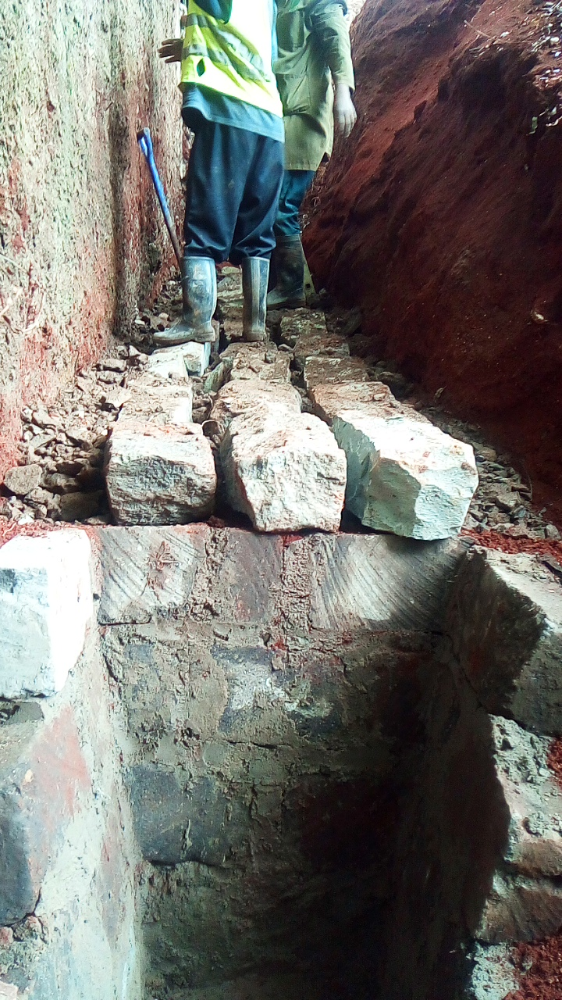
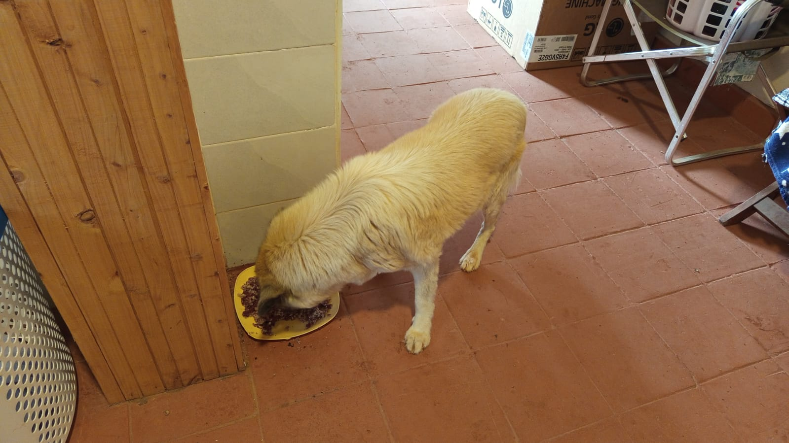

Mucheru World of Golf
Field civil works, agronomy rootzone leveling, localized drainage realignments, apron soil preparation, surface rock clearance, reservoir inflows, and inter-site material transfers at Mucheru World of Golf on Friday, 6th November 2026 under the supervision of Ken and Mr. Gichuhi:
Golf Course Operational Highlights
Agronomy teams completed the final river sand leveling across Green 10, bringing the rootzone surface flush within the completed red soil apron collar. Ground crews loosened compacted red soil along the aprons of Greens 4, 7, 8, and 15 (and Green 6) using jembes and forks to prepare them for easy rake leveling and shaping tomorrow. Technicians resolved drainage issues at Green 5 by rebuilding the connection line, restoring continuous gravity runoff into the main trench. Drainage shaping advanced along Green 6 and near Teebox 5, unwanted rocks were cleared around multiple greens and teeboxes, dual inflows replenished Dams 1 and 2, and surplus HDPE pipes and salvaged toilet structures were hauled to Chaka Farms greenhouse.
- Green 10 River Sand Rootzone Leveling Fully Complete: Agronomy workers finished hand-leveling washed river sand across the entire bed of Green 10, establishing a uniform rootzone depth inside the graded red soil apron boundary.
- Apron Red Soil Excavated & Loosened Across Multiple Greens: Laborers dug into the red soil collars of Greens 4, 7, 8, and 15 (and Green 6) to loosen the hard soil so it can be shaped and leveled easily with rakes tomorrow.
- Green 5 Gravity Drainage Connection Realigned & Fixed: Drainage technicians excavated and rebuilt the discharge pipe connection for Green 5 after it was affected by connecting Green 7 drainage, verifying free gravity flow.
- Green 6 & Teebox 5 Drainage Trenches Leveled & Shaped: Ground crews shaped and graded the drainage invert beside Green 6 and leveled the large perimeter trench near Teebox 5 to maintain proper slope and runoff velocity.
- Course-Wide Clearance of Unwanted Rocks & Debris: Laborers cleared stones, rocks, and surface debris from surrounding rough corridors around Greens 4, 7, 8, 16, and 17, as well as Teeboxes 6, 8, and 16.
- Dual Dam Water Inflows & Greenhouse Asset Transfers: Intake pipelines actively fed Dam 1 and Dam 2 simultaneously while Dam 3 intake was closed; farm tractors hauled surplus HDPE pipes and salvaged temporary toilet materials to the Chaka Farms greenhouse.
Field video recording documenting Friday, 6th November 2026 operations at Mucheru World of Golf:
Field video recording capturing daily course civil works, drainage trenching, apron soil preparation, and reservoir replenishment at Mucheru World of Golf on Friday, 6th November 2026.
18-hole putting green status audit showing the latest work completed and current condition for each green as of November 6, 2026:
| Green | Current Technical & Agronomic State | Milestone Status |
|---|---|---|
| Green 1 | Pop-up sprinklers confirmed functional and operational spray coverage verified (Oct 27). | Pop-Ups Functional |
| Green 2 | Pop-up sprinklers operational with pressurized spray coverage actively watering green (Oct 28). | Pop-Ups Functional |
| Green 3 | Electric solenoid valve installed on lateral line; river sand hauled to Green 13 (Oct 26). | Solenoid Installed |
| Green 4 Today | Red soil apron dug and loosened for raking tomorrow; rocks cleared around green (Nov 6). | Apron Loosened & Cleared |
| Green 5 Today | Drainage connection redone after Green 7 tie-in; gravity water outflow working smoothly (Nov 6). | Drainage Rectified |
| Green 6 Today | Drainage trench leveled and shaped for gravity flow; red soil apron loosened for leveling (Nov 6). | Drainage Trench Leveled |
| Green 7 Today | Red soil apron dug and loosened for raking tomorrow; rocks cleared around green (Nov 6). | Apron Loosened & Cleared |
| Green 8 Today | Red soil apron dug and loosened for raking tomorrow; rocks cleared around green (Nov 6). | Apron Loosened & Cleared |
| Green 9 | River sand hauled from stockpiles to Greens 12 and 16 for rootzone layering (Oct 29). | River Sand Hauled |
| Green 10 Today | River sand leveling fully complete across putting green bed within red soil apron collar (Nov 6). | River Sand Leveled |
| Green 11 | Pop-up sprinklers confirmed functional and operational spray coverage verified (Oct 27). | Pop-Ups Functional |
| Green 12 | River sand spread and leveled across putting green rootzone layer over sub-base (Oct 31). | River Sand Leveled |
| Green 13 | Pop-up sprinkler heights adjusted flush below apron level prior to apron leveling (Nov 2). | Sprinkler Height Adjusted |
| Green 14 | Pop-up sprinkler heights adjusted flush below apron level prior to apron leveling (Nov 2). | Sprinkler Height Adjusted |
| Green 15 Today | Red soil apron dug and loosened for easy raking and shaping tomorrow (Nov 6). | Apron Loosened |
| Green 16 Today | Unwanted rocks, stones, and surface debris cleared around green surrounds (Nov 6). | Surrounds Cleared |
| Green 17 Today | Unwanted rocks, stones, and surface debris cleared around green surrounds (Nov 6). | Surrounds Cleared |
| Green 18 | River sand applied to unapplied segments and leveled across putting green bed (Nov 5). | River Sand Applied |
18-hole championship teebox status audit tracking launch platform shaping, red soil leveling, and planting readiness as of November 6, 2026:
| Teebox | Current Technical & Earthwork State | Platform Status |
|---|---|---|
| Tee 1 | Irrigation pipe trenches excavated across platform along marked survey lines (Oct 26). | Pipe Trenches Dug |
| Tee 2 | Red soil applied halfway across platform; lateral pipe trenches backfilled (Oct 27). | Red Soil Halfway |
| Tee 3 | Red soil applied, spread, and leveled across platform; lateral pipe trenches covered (Oct 27). | Red Soil Leveled |
| Tee 4 | Irrigation pipe trenches excavated across platform along marked survey lines (Oct 26). | Pipe Trenches Dug |
| Tee 5 Today | Big drainage trench near teebox leveled and shaped for proper gravity water flow (Nov 6). | Trench Leveled & Shaped |
| Tee 6 Today | Unwanted rocks, stones, and surface debris cleared around teebox platform (Nov 6). | Rocks & Debris Cleared |
| Tee 7 | Pop-up sprinkler heights checked and adjusted flush below teebox platform level (Nov 2). | Sprinkler Height Adjusted |
| Tee 8 Today | Unwanted rocks, stones, and surface debris cleared around teebox platform (Nov 6). | Rocks & Debris Cleared |
| Tee 9 | Surplus red soil hauled to Teebox 7 for platform shaping and surface leveling (Oct 29). | Red Soil Hauled |
| Tee 10 | Irrigation pipe trenches excavated across platform along marked survey lines (Oct 26). | Pipe Trenches Dug |
| Tee 11 | Electric solenoid valve installed on lateral irrigation supply line (Oct 27). | Solenoid Installed |
| Tee 12 | Unwanted rocks, stones, and waste cleared around both teebox platforms (Nov 4). | Rocks & Waste Cleared |
| Tee 13 | Electric solenoid valve installed on lateral irrigation supply line (Oct 27). | Solenoid Installed |
| Tee 14 | Pop-up sprinkler heights checked and adjusted flush below teebox platform level (Nov 2). | Sprinkler Height Adjusted |
| Tee 15 | Irrigation pipe trenches excavated across platform along marked survey lines (Oct 26). | Pipe Trenches Dug |
| Tee 16 Today | Unwanted rocks, stones, and surface debris cleared around teebox platform (Nov 6). | Rocks & Debris Cleared |
| Tee 17 | Pop-up sprinkler heights checked and adjusted flush below teebox platform level (Nov 2). | Sprinkler Height Adjusted |
| Tee 18 | Irrigation pipe trenches excavated across platform along marked survey lines (Oct 26). | Pipe Trenches Dug |
Operations Agronomy & Engineering Synthesis
Course Agronomy & Earthwork Milestones: Agronomy crews finished river sand leveling across Green 10; red soil aprons were dug and loosened on Greens 4, 7, 8, and 15 (and Green 6) to facilitate rake leveling tomorrow; the Green 5 drainage connection was rebuilt and restored; drainage trench leveling advanced along Green 6 and near Teebox 5; unwanted rocks and debris were cleared around Greens 4, 7, 8, 16, and 17 as well as Teeboxes 6, 8, and 16; and day-to-day state continuity is preserved across all 18 greens and 18 teeboxes.
Hydraulic Infrastructure: Inflows actively filled Dam 1 and Dam 2 simultaneously to boost course water reserves while Dam 3 intake was closed; farm tractors hauled surplus HDPE pipes and salvaged temporary toilet materials to the Chaka Farms greenhouse.
Sequential photographic field documentation showing river sand finishing on Green 10, apron soil loosening, drainage shaping, rock clearance, and material haulage:

Green 10 — Aerial View of Finished River Sand Bed
High-angle drone view showing the completely leveled river sand bed on Green 10 neatly bounded by the graded red soil apron collar.

Green 10 — Hand-Leveling River Sand Layer
Field workers using rakes and scrapers to distribute and level the golden river sand layer over the green sub-base foundation.

Greens 4 & 8 — Aerial View of Loosened Aprons
Overhead drone perspective displaying Greens 4 and 8 with their sand beds and surrounding red soil aprons freshly dug and loosened.

Green 4 — Loosening Apron Soil for Rake Shaping
Laborers using digging forks to break up compacted red soil along the apron of Green 4, preparing the collar for leveling tomorrow.

Green 8 — Red Soil Apron Loosened Around Sand Bed
View of Green 8 showing the broken, aerated red soil apron prepared for raking, alongside the drainage inlet corridor.

Green 8 — Crew Tilling Red Soil Collar
Field crew working with jembes and forks across the outer red soil ring of Green 8 to loosen the earth for subsequent contour shaping.

Green 6 — Apron Red Soil Loosened for Shaping
Mound of excavated red soil on the apron of Green 6 loosened and prepped for smooth rake spreading and slope contouring.

Course Maintenance — Clearing Rocks & Unwanted Debris
Laborers utilizing wheelbarrows and shovels to clear surface rocks, stones, and unwanted debris from rough areas around greens and teeboxes.

Green 6 — Aerial View of Drainage Trench Works
Overhead drone view showing laborers shaping the drainage trench between Green 6 and the lined reservoir basin embankment.

Green 6 — Elevated View of Trench Gravity Corridor
Elevated perspective showing the drainage trench alignment running along the tree line beside the geomembrane-lined basin.

Green 6 — Shaping Drainage Trench Invert Bed
Workers in the trench excavating and smoothing the trench invert to establish a continuous slope for unimpeded gravity runoff.

Green 6 — Drainage Channel Excavation Progress
Labor crew working with shovels to deepen and align the drainage channel running parallel to the lined reservoir bund.

Green 5 — Rebuilding Drainage Pipe Connection
Technicians working inside the drainage trench realigning and securing the brown PVC pipe line to restore full gravity runoff flow.

Teebox 5 — Leveling Big Perimeter Drainage Trench
Laborers shaping and grading the deep perimeter drainage trench alongside the boundary wire fence and young palm trees near Teebox 5.

Dam 3 — Aerial View of Stored Water Reserves
High-angle drone view of Dam 3 showing substantial water retention in the lined canal; intake remained closed today to feed Dams 1 and 2.

Material Haulage — Loading HDPE Pipes onto Tractor
Workers loading surplus HDPE irrigation pipes into the farm tractor's red tipper trailer for transfer to the Chaka Farms greenhouse.

Asset Transfer — HDPE Pipes Delivered to Greenhouse
Coils of black HDPE piping safely delivered and offloaded on the grass beside the greenhouse structures at Chaka Farms.

Asset Transfer — Salvaged Toilet Structure Delivery
Workers offloading timber framing and corrugated iron sheets from the temporary toilet structure relocated to Chaka Farms greenhouse.
Chaka Farms
Commercial dairy production, newborn livestock delivery, goat shed access ramp replacement, canine unit hygiene and manners training, compound hedge trimming, and grounds maintenance at Chaka Farms on Friday, 6th November 2026:
Farm Operational Highlights
Dairy production logged by Kamandau achieved a 10.0 Litres gross cow milk harvest (6.5L morning + 3.5L evening), 100% reconciled in Litres through 9.0 Litres commercial sales (5.5L morning + 3.5L evening) and 1.0 Litre in internal farm allocations (0.5L Gladys + 0.5L Maasai). The farm celebrated the birth of a healthy new goat kid in the pine paddock. Ken directed the dismantling of the old deteriorating goat shed ramp and completed the construction of a sturdy new timber ramp with handrails, alongside hedge trimming and compound lawn mowing at the main house. Willy maintained kennel sanitation, cleaned all dogs, and conducted paw command and off-leash routines. Margaret and Monica swept gravel driveways and collected fallen leaves.
- 100% Quantitative Reconciliation of 10.0 Litre Dairy Harvest: Morning (6.5L) and evening (3.5L) milking yielded 10.0 Litres gross harvest, fully accounted for by 9.0 Litres commercial sales, 0.5 Litres Gladys staff ration, and 0.5 Litres Maasai internal allocation with zero discrepancy.
- New Healthy Goat Kid Welcomed to Livestock Herd: A breeding doe safely gave birth to a healthy, active new kid under the pine tree paddock, expanding the farm's thriving dairy goat population.
- Complete Dismantling of Deteriorated Goat Shed Access Ramp: Workers under Ken's direction fully took down the worn, rot-affected wooden entry ramp leading to the elevated goat shed floor.
- Construction of Sturdy New Wooden Access Ramp Complete: Carpenters framed and erected a robust new timber ramp utilizing treated support posts, solid longitudinal beams, clean deck planks, and sturdy side rails.
- Canine Hygiene, Manners Drills & Morning Off-Leash Walking: Willy executed complete kennel cleaning, cleaned all resident dogs, practiced paw command exercises and crate manners, and conducted morning off-leash paddock runs.
- Main House Compound Hedge Trimming, Lawn Mowing & Sweeping: Grounds staff trimmed ornamental hedges and cut compound lawn grass, while Margaret and Monica gathered fallen leaves in sacks to keep driveways pristine.
Official milking production and distribution reconciliation for Friday, 6th November 2026, accounting for all commercial sales and on-farm allocations:
| Category / Transaction | Morning Session | Evening Session | Daily Total |
|---|---|---|---|
| Gross Cow Milk Harvested | 6.5 Litres | 3.5 Litres | 10.0 Litres |
| Commercial Milk Sales (Dispatched) | 5.5 Litres | 3.5 Litres | 9.0 Litres |
| Internal Farm Allocation — Gladys | 0.5 Litres | 0.0 Litres | 0.5 Litres |
| Internal Farm Allocation — Maasai | 0.5 Litres | 0.0 Litres | 0.5 Litres |
| Total Volume Accounted For | 6.5 Litres | 3.5 Litres | 10.0 Litres (100% Reconciled) |
Dairy Accounting & Farm Reconciliation Note
Total gross cow milk harvested of 10.0 Litres (6.5L morning + 3.5L evening) is 100% accounted for by 9.0 Litres dispatched for commercial sales (5.5L morning sale + 3.5L evening sale) and 1.0 Litre in routine internal farm disbursements (0.5L staff allocation to Gladys + 0.5L internal allocation to Maasai). In compliance with farm accounting standards, all milk volumes are recorded strictly in Litres (never kilograms), Maasai is designated strictly as Maasai with zero discrepancy, and gross production balances perfectly with zero discrepancy.
Canine behavioral conditioning routines, goat shed access ramp construction, and compound landscape maintenance conducted on Friday, 6th November 2026:
Field video documenting kennel manners conditioning, crate discipline, and paw command responsiveness under Willy's guidance.
- Kennel Stall Sanitation & Paw Command Drills: Willy conducted thorough stall washing, disinfectant sanitizing, and responsive paw command drills with the dogs.
- All Dogs Cleaned & Morning Off-Leash Exercise: Every resident canine received full washing and grooming today, complemented by supervised morning off-leash running across farm paddocks.
- Old Goat Shed Ramp Completely Dismantled: Workers removed all worn, rotted timber planks and old support posts from the entrance of the elevated goat shed.
- Sturdy New Wooden Access Ramp Fully Built: Carpenters and farm laborers framed, reinforced, and planked a brand new wooden ramp with secure side rails, restoring safe herd access.
- Main House Compound Hedge & Lawn Trimming: Ken oversaw the systematic pruning and shaping of boundary hedges and mowing of lawn turf around the main house grounds.
- Gravel Driveway Sweeping & Foliage Collection: Margaret and Monica swept trimmed hedge foliage along estate gravel driveways, bagging all cuttings for disposal.
Sequential photographic field documentation showing newborn livestock, complete goat shed ramp replacement, hedge trimming, and compound maintenance:

Livestock Growth — Newborn Goat Kid in Paddock
Newborn white goat kid standing and walking under the pine trees beside the mother doe following a successful birth.

Goat Shed — Dismantling Deteriorated Access Ramp
Worker using hand tools and a chainsaw to take down the worn, weather-damaged timber ramp leading into the elevated goat shed.

Goat Shed — Old Ramp Completely Removed
Kamandau and farm workers inspecting the cleared entrance area with old timber planks and poles neatly cleared away.

Goat Shed — Framing Timbers for New Ramp
Carpenter cutting round timber stringers with a chainsaw, aligning the structural incline for the replacement access ramp.

Goat Shed — Assembling Ramp Structural Frame
Farm workers in green overalls nailing and securing primary longitudinal round timber beams onto vertical treated fence posts.

Goat Shed — Aligning Incline Support Beams
Crew verifying the spacing and level alignment of longitudinal support timbers prior to fixing horizontal cross-decking planks.

Goat Shed — Completed New Wooden Access Ramp
Finished view of the robust, newly constructed wooden ramp featuring solid deck planks and dual handrails ready for daily herd movement.

Estate Grounds — Hedge Trimming & Pathway Sweeping
Grounds staff trimming overgrown boundary hedges with manual shears and sweeping fallen cuttings along the driveway corridor.

Compound Upkeep — Collecting Trimmed Foliage in Sacks
Margaret carrying a collection sack gathering trimmed leaves and twigs along the driveway, with Monica sweeping in the background.

Compound Upkeep — Driveway Foliage Clearance
Margaret and Monica working diligently along the driveway border, collecting swept hedge trimmings to ensure spotless estate pathways.
Kabete Residence
Sub-structure perimeter drainage tunnel stone masonry, concrete mortar batching, stepped channel invert construction, outdoor pergola patio deep washing, and domestic pet care at Kabete Residence on Friday, 6th November 2026:
Residence Operational Highlights
Masons continued stone masonry wall construction along the deep foundation drainage tunnel behind the Staff Quarters (SQ) and cold room to protect the red soil embankment against moisture intrusion. Workers placed dressed quarry stone blocks along the stepped channel invert to decelerate stormwater runoff speed, while batching fresh concrete mortar on site using Blue Triangle cement and aggregate ballast. General compound maintenance included thorough wet-washing of terracotta tiles across the outdoor pergola patio and organizing patio furnishings. Domestic pet care ensured Ajabu the Golden Retriever enjoyed a wholesome dinner indoors, while resident cats Reo, Mocha, and Aiko dined peacefully together.
- SQ & Cold Room Drainage Tunnel Masonry Progress: Masons raised vertical stone masonry courses along the earthen walls of the deep perimeter trench excavated behind the SQ and cold room.
- Stepped Channel Invert & Flow Baffling Stonework: Heavy dressed stone blocks were laid along the stepped channel floor to create a sturdy hydraulic invert that slows rushing rainwater runoff.
- On-Site Mortar & Concrete Batching: Workers prepared structural mortar and concrete batches on site, blending Blue Triangle cement with coarse black ballast and washed sand.
- Pergola Patio Deep Cleaning & Washing: Maintenance staff performed thorough wet scrubbing and washing of terracotta tiles across the outdoor pergola patio, neatly arranging outdoor wicker and lounge furniture.
- Attentive Domestic Pet Care for Ajabu & Resident Cats: Ajabu the Golden Retriever enjoyed his evening dinner indoors on the terracotta tile floor, while resident cats Reo, Mocha, and Aiko dined peacefully side-by-side from stainless steel dishes.
Sequential photographic field documentation showing drainage tunnel stone masonry, concrete preparation, pergola patio cleaning, and pet care:

Civil Works — Concrete Mortar Batching for Tunnel
Bag of Blue Triangle cement surrounded by black aggregate ballast and sand, staged for on-site mixing to bind drainage tunnel stone masonry.

Drainage Tunnel — Stepped Stone Channel Invert
Masons in safety gear positioning heavy dressed quarry stones along the stepped trench floor behind the SQ and cold room to control runoff flow.

Rear Drainage Tunnel — Channel Alignment & Masonry
Perspective along the constructed stone masonry drainage corridor behind the SQ and cold room showing stone retaining walls.

Drainage Tunnel — Masonry Wall Construction
Stone retaining wall courses being built up against the vertical earthen red soil embankment to permanently secure the deep trench.

Hydraulic Masonry — Stone Lining Progress
Close longitudinal view of mortared stone masonry courses running along the base of the drainage trench behind the SQ and cold room.

Residence Grounds — Pergola Patio Deep Cleaning
Freshly washed terracotta tiles across the outdoor pergola courtyard with outdoor wicker armchairs, swing chair, and tables arranged neatly.

Domestic Pet Care — Ajabu Evening Dinner
Ajabu the Golden Retriever enjoying his evening dinner served on his dedicated plate on the terracotta tile floor indoors.

Domestic Pet Care — Resident Cats Reo, Mocha & Aiko
Resident cats Reo, Mocha, and Aiko eating their evening meal side-by-side from stainless steel bowls on the terracotta floor indoors.